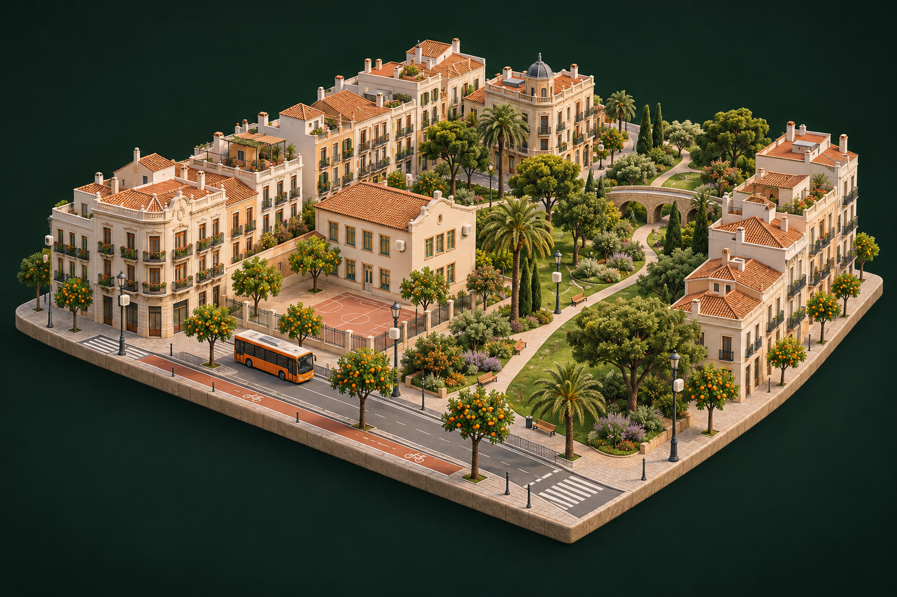

Hoy
Límite legal vigente de la UE
NO₂ · 40 µg/m³
PM2.5 · 25 µg/m³
Cumplimos.
TECNOLOGÍA LOCAL. AIRE COMPARTIDO.
El aire cambia de una calle a otra.
La forma de medirlo también debería.
Proponemos una red de sensores en colegios, farolas y transporte público para conocer mejor el aire de València. Y tomar mejores decisiones, juntos.
Datos oficiales. Propuesta abierta. Proyecto educativo.
30µg/m³NO₂ · media anual
Por encima de la referencia UE 2030
Referencia UE 2030: 20 µg/m³
El punto
de partida
UN POCO DE AIRE. UN GRAN CAMBIO.
La marinada es la brisa que llega del mar.
Nos inspira a conectar la ciudad y hacer visible lo que respiras.
Mueve el cursor por la red y juega con el aire.
Simulación visual del concepto, sin mediciones reales.
01 / LEER LA CIUDAD
El Objetivo de Desarrollo Sostenible 11 de la ONU busca ciudades inclusivas, seguras, resilientes y sostenibles. Su meta 11.6 pide reducir de aquí a 2030 el impacto ambiental negativo por habitante de las ciudades, prestando especial atención a la calidad del aire.
La Comisión Europea eligió a València como Capital Verde Europea de 2024. La ciudad ya ha apostado por el medio ambiente.
Una única zona delimitada por la Ronda Nord, Tarongers, Serrería y el Bulevard Sud, vigilada por 278 cámaras. Los vecinos de la ciudad no se ven afectados hasta el 1 de enero de 2028.
El informe oficial de 2024 da la media anual de NO₂ de solo 8 estaciones en València. Nadie sabe cómo es el aire en su calle ni en la puerta de su colegio.
Cada círculo es una estación oficial: por debajo del límite, justo en el límite, lo supera.
Límite legal vigente de la UE
Cumplimos.
Nueva directiva europea (UE) 2024/2881
No cumplimos.
Recomendación de la OMS (2021)
Lejos.
Medias anuales de 2024 (µg/m³). Bulevard Sud no mide PM2.5, por eso hay 8 estaciones de NO₂ y 7 de PM2.5. Fuente: Generalitat Valenciana, Evaluación de la Calidad del Aire 2024.
02 / EL AIRE IMPORTA
Dos vídeos de la campaña BreatheLife de la Organización Mundial de la Salud. El vídeo solo se carga al pulsar el botón de reproducir, y se reproduce desde youtube-nocookie.com.
Los vídeos necesitan conexión a Internet. Cuando vuelva la conexión, recarga la página o pulsa en el vídeo.
03 / DE LA CALLE A TU PANTALLA
Los nodos fijos miden siempre en el mismo sitio. Los sensores móviles van en autobuses de la EMT y bicis Valenbisi y recorren la ciudad. Juntos dibujan un mapa vivo de la contaminación por calle y por hora.

Ilustración conceptual generada con IA. Red propuesta, todavía no desplegada.
Sensores en colegios, farolas, autobuses y bicis. Puntos fijos y móviles para observar la ciudad desde la calle.
Las medidas viajan por LoRaWAN, una conexión de largo alcance y bajo consumo. La ciudad empieza a compartir lo que sabe.
La propuesta calibra los sensores con las estaciones oficiales y cruza sus medidas con el tráfico y la meteorología para anticipar cambios.
Una app ciudadana, un panel municipal y datos abiertos. Información para planificar rutas, emitir avisos y decidir dónde actuar.
Ahora, explora el mapa real04 / UNA MIRADA A VALÈNCIA
Los círculos con número son las estaciones con media oficial de NO₂ en 2024 (µg/m³). Los círculos grises son otras estaciones municipales que no tienen media en el informe de 2024. Los rombos verdes son nodos Respira cerca de colegios: son una propuesta, todavía no existen.
No se ha podido cargar el mapa. Los datos de las estaciones están en la sección siguiente.
Sin conexión a Internet no se ve el fondo del mapa (calles de OpenStreetMap), pero los puntos y sus datos sí funcionan.
05 / DATOS, NO SUPOSICIONES
Medias anuales oficiales de dióxido de nitrógeno (NO₂) y partículas finas (PM2.5) en las estaciones de València. La página lee el archivo data/aire_2024.json, que preparamos con pandas.
NO₂ medio de las 8 estaciones
– µg/m³
NO₂ máximo
– µg/m³
NO₂ mínimo
– µg/m³
PM2.5 medio de las 7 estaciones
– µg/m³
PM2.5 máximo
– µg/m³
PM2.5 mínimo
– µg/m³
µg/m³, de menor a mayor. Las líneas verticales marcan los tres listones.
µg/m³, de menor a mayor. Bulevard Sud no mide PM2.5.
µg/m³, media de 5 estaciones que midieron todos los años (Av. França, Bulevard Sud, Pista de Silla, Politècnic y Vivers), 2016-2022.
µg/m³, NO₂ medio por hora del día en 2022, todas las estaciones. En naranja, las horas por encima de 20.
Las dos gráficas de arriba usan los datos horarios del portal de datos abiertos del Ajuntament de València; las de 2024, el informe anual validado de la Generalitat. Por eso no se mezclan en la misma gráfica.
| Estación | NO₂ | PM2.5 | Horas con NO₂ > 200 | Datos válidos NO₂ |
|---|
Cada barra es la concentración media de todo 2024 en una estación oficial. Las barras naranjas superan el límite de 2030 y las de naranja claro están justo en él. Si solo miramos la línea de 40 µg/m³ (NO₂) o la de 25 µg/m³ (PM2.5), toda la ciudad aprueba. Con los límites de la nueva directiva, que se aplican desde 2030, Olivereta supera el de NO₂ y Centre se queda justo en 20 µg/m³. En PM2.5 superan el límite 4 de las 7 estaciones, y Av. França y Molí del Sol se quedan justo en 10 µg/m³. Con la recomendación de la OMS, que es el listón de salud, no aprueba ninguna.
Una media anual de 8 puntos no dice qué pasa en cada calle ni a cada hora, y los datos demuestran que el aire cambia mucho: Olivereta tiene casi el triple de NO₂ que Politècnic, y a las 7:00 hay 2,5 veces más NO₂ que a las 3:00. Respira VLC añade cientos de puntos de medida calibrados con estas mismas estaciones. Así el Ayuntamiento puede ver dónde se acumula el NO₂, comprobar si la ZBE funciona calle a calle y llegar a 2030 sabiendo dónde actuar primero. Las familias pueden ver el aire en la puerta del colegio de sus hijos, justo a la hora de entrar.
Cada tarjeta es una operación de nuestro notebook datos/analisis_aire_valencia.ipynb, con el resultado que da. Los resultados de esta página se calculan con el mismo archivo de datos.
Cargar los datos
df = pd.read_csv("aire_valencia_2024.csv")8 estaciones, 2 contaminantes
Media
df["no2"].mean()17,8 µg/m³ de NO₂
Máximo y dónde
df.loc[df["no2"].idxmax()]30 µg/m³ en Olivereta
Ordenar de menor a mayor
df.sort_values("no2")Politècnic 11 → … → Olivereta 30
Filtrar: superan el límite 2030
df[df["pm25"] > 10]4 de 7 en PM2.5: Politècnic, Vivers, Centre, Olivereta
Agrupar por tipo de zona
df.groupby("tipo_zona")["no2"].mean()Urbana 19,2 · Suburbana 13,5 µg/m³
Columna calculada
df["veces_oms"] = df["no2"] / 10Olivereta respira 3 veces lo que recomienda la OMS
Agrupar 554.146 filas horarias por año
horas.groupby("anio")["NO2"].mean()De 29,8 (2016) a 16,0 (2022): −46 %
06 / IMAGINA EL IMPACTO
Elige cuántos colegios, farolas y vehículos quieres equipar y mira cuántos puntos de medida tendría la ciudad. Solo contamos lo que se mide; no calculamos cuánto bajaría la contaminación.
Cada punto representa un sensor exterior.
–
respecto a los 8 puntos oficiales de referencia (– puntos exteriores propuestos)
–
aulas con el aire medido
–
alumnos que respiran aire medido (25 por aula)
Coste el primer año
–
Puntos de medida exterior = 1 sensor en la puerta de cada colegio + cada nodo de farola + cada sensor móvil. Los sensores de aula miden el aire interior y no cuentan como puntos exteriores. Precios del catálogo; IVA no incluido.
07 / HECHO AQUÍ
Marinada Labs toma su nombre de la marinada, la brisa que sube del mar por la tarde y limpia el aire de la ciudad. Somos un equipo de 2.º de ASIR.
Datos y análisis con pandas
Ha buscado los datos oficiales, los ha analizado con pandas y ha sacado las conclusiones que relacionan los datos con el producto.
Web, diseño y producto
Ha diseñado la web, los logotipos y el catálogo, y ha integrado las gráficas y el mapa.
08 / DETRÁS DE CADA CIFRA
09 / ELIGE CÓMO EMPEZAR
Cinco gamas para cinco escalas: desde la app gratuita hasta una red para toda la ciudad. Todo el hardware es abierto, barato y se calibra con las estaciones oficiales. Los precios no incluyen IVA; el pedido lo desglosa.
Para la ciudadanía
Gratis
Para clases y oficinas
79 € por sensor
Recomendado
Para colegios
690 € por colegio
Más barato que 10 Aula sueltos (790 €) y con sensor exterior incluido
Para EMT y Valenbisi
249 € por unidad
Para el Ayuntamiento
9.900 € + 1.200 €/año
| Característica | App | Aula | Escola | Mòbil | Ciutat |
|---|---|---|---|---|---|
| Mide PM2.5 | |||||
| Mide NO₂ | |||||
| Mide CO₂ en interior | |||||
| Semáforo LED para ventilar | |||||
| Mide en movimiento | |||||
| Panel solar | |||||
| Panel de gestión | |||||
| Predicción a 24 h | |||||
| Alimenta los datos abiertos | |||||
| Precio sin IVA | Gratis | 79 € | 690 € | 249 €/ud. | 9.900 € + 1.200 €/año |
Todavía no has añadido nada. Elige una gama del catálogo con «Añadir al pedido».
Respira Ciutat incluye en el total la cuota de plataforma del primer año (1.200 € por lote). Los años siguientes se facturan aparte.